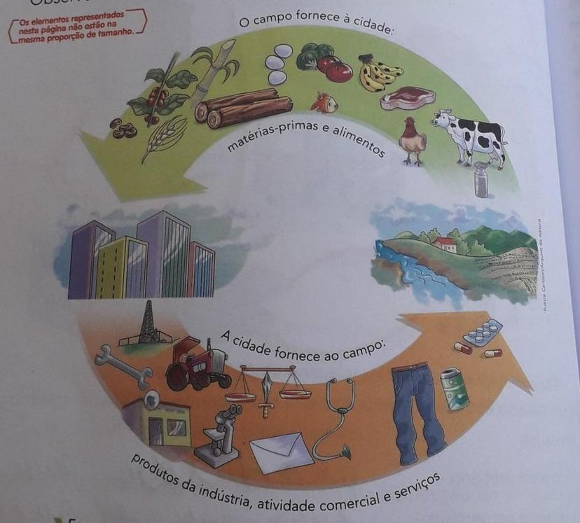

matérias-primas
O campo fornece à cidade matérias-primas como alimentos (frutas, verduras, grãos, carnes, laticínios), fibras (algodão para roupas), madeira (construção civil), além de insumos para biocombustíveis e produtos farmacêuticos. A cidade, por sua vez, fornece ao campo produtos industrializados (roupas, calçados, ferramentas, máquinas), serviços (bancários, de saúde, etc.) e tecnologia.
Retornar